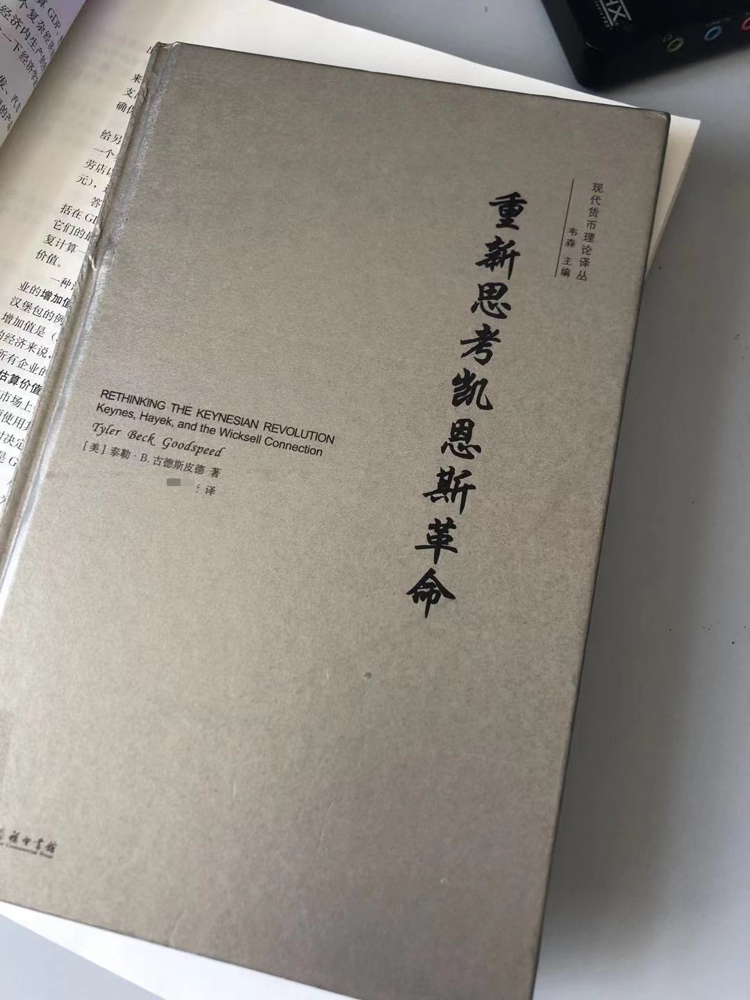
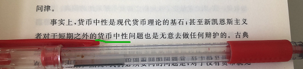
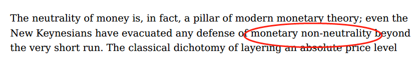

为什么建议同学们读英文原版教材¶
这学期的课程又是两个国际化取向班级的宏观经济学，按学校规定是双语授课，我们采用某知名经济学家的英文原版教材结合中文的马工程教材。
这本英文版教材有非常好的中译本，知名译者，知名出版社出版。但我还是强调希望同学们尽量不要看中译本，努力去尝试读英文原版的。大道理我就不多说了，说也说不过那些明星网红和大腕，我就举个朴素的例子吧。
前几天为了备课，想看看如下这本书中关于货币中性的论述（随着课程的进行，我们会对货币中性仔细学习的）：

这本书作者是外国大牛，译丛主编是中国大牛，出版社更是大牛，书的译者也是大牛。水平都是极高，饶是如此，翻译过程中也难免有笔误或与作者原意理解不同之处。仅举一例。请看下面中文版某页截图：因为是图书馆借的书，我不敢在书页上划线，因此用圆珠笔横在页面上，大家看圆珠笔之上两行的那句话，如何去理解这段中文？

“事实上，货币中性是现代货币理论的基石，甚至新凯恩斯主义者对于短期之外的**货币中性**问题也是无意去做任何辩护的。” 这句话，如果你没学过货币中性或货币理论或新凯恩斯主义，你好像能看懂。但是如果你了解一点点这方面知识，你就会觉得可能不懂这句话了。货币中性是现代货币理论的基石，这没问题。可是为什么“甚至”一下？新凯恩斯主义为什么是“对货币中性无意辩护”？
我反正是没看懂（费解），于是费了好大一番周折找来英文原文，看到这部分的原文是这样的：

请注意红色圈内的英文单词是non-neutrality，它的中文意思是“货币非中性”，这与上述的中译含义正好相反了，显然中译把“货币中性”和“货币非中性”搞混了，这样，读者就一定是要么不理解，要么是理解错了。
我用啰嗦的语言把这段话解释一下：
这段大体意思应该是这样的：货币中性是货币理论的基石。而新凯恩斯主义者，他们是主张货币是非中性的，但是即使是这些主张货币非中性的新凯恩斯主义者，也只是认为货币非中性只是在很短的时期内才成立，在中长期他们也并不坚持货币非中性。即在即使新凯恩斯主义者也承认在中长期货币是中性的。（以此突显货币中性是货币理论的基石的说法）。
就这么一个很可能是译者笔误的小问题（我相信译者肯定是懂原文的，只是有了关键笔误，漏了一个“非”字），却把这句话整个意思搞反了，我想，同学们应该能理解为什么我强调要读原文了吧？